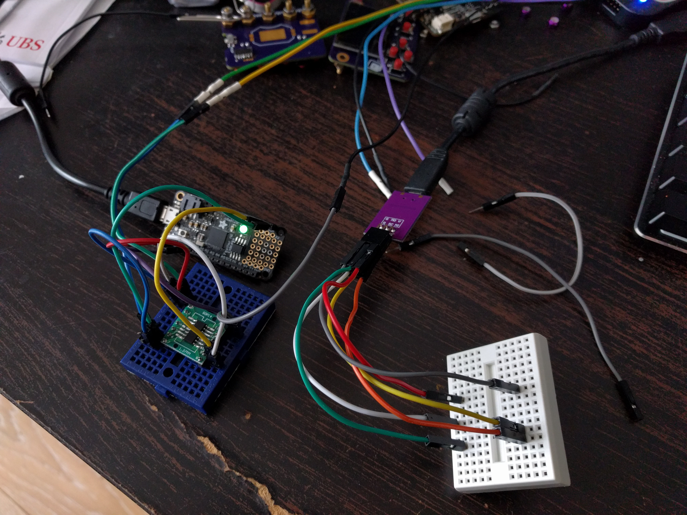

Button Controller¶
Published on 2018-01-17 in Micro:Boy.
The ATtiny24A chips I ordered finally arrived yesterday, and I could start working on the firmware for the button controller. I quickly assembled a setup for experimenting:
One mini-breadboard for programming, one for testing the I2C (since programming uses the same pins, and I2C needs the pullup resistors, it would be hard to have everything on one board). The chip is on a breakout board for easy plugging. An Adafruit Feather M0 Express plays the role of the I2C master. Some additional wires for the logic analyzer complete the setup.
———- more ———-First I tried to use the TinyWireS library, and wasted whole evening yesterday trying to get it to work. The device would show up in the scan (meaning it ACKs writes), but all reads would give me 0xFF — and the logic analyzer confirms that, so something must be wrong in software.
Finally, I decided to switch to the USIWire library, and that worked without problems out of the box. Here is my code:
#include <USIWire.h>
#define PINS_COUNT 6
const uint8_t pins[PINS_COUNT] = {0, 1, 2, 3, 5, 7};
volatile bool clear = false;
volatile uint8_t buttons = 0;
void request() {
Wire.write(buttons);
clear = true;
}
void setup() {
for (uint8_t i = 0; i < PINS_COUNT; ++i) {
pinMode(pins[i], INPUT_PULLUP);
}
Wire.begin(0x10);
Wire.onRequest(request);
}
void loop() {
static uint8_t last_buttons = 0;
uint8_t current_buttons = 0;
for (uint8_t i = 0; i < PINS_COUNT; ++i) {
current_buttons <<= 1;
current_buttons |= !digitalRead(pins[i]);
}
if (clear) {
clear = false;
buttons = 0;
}
buttons |= last_buttons & current_buttons;
last_buttons = current_buttons;
delay(16);
}
Not much code, but it does de-bouncing and caching of the presses until they are read — which is why I needed a microcontroller, instead of a simple GPIO expander chip. It all works pretty well, I think I’m going to use the same approach in the next version of the D1 Mini X-Pad Shield .
After soldering the chip to the Micro:bit, it still works very well, so I’m happy with it.